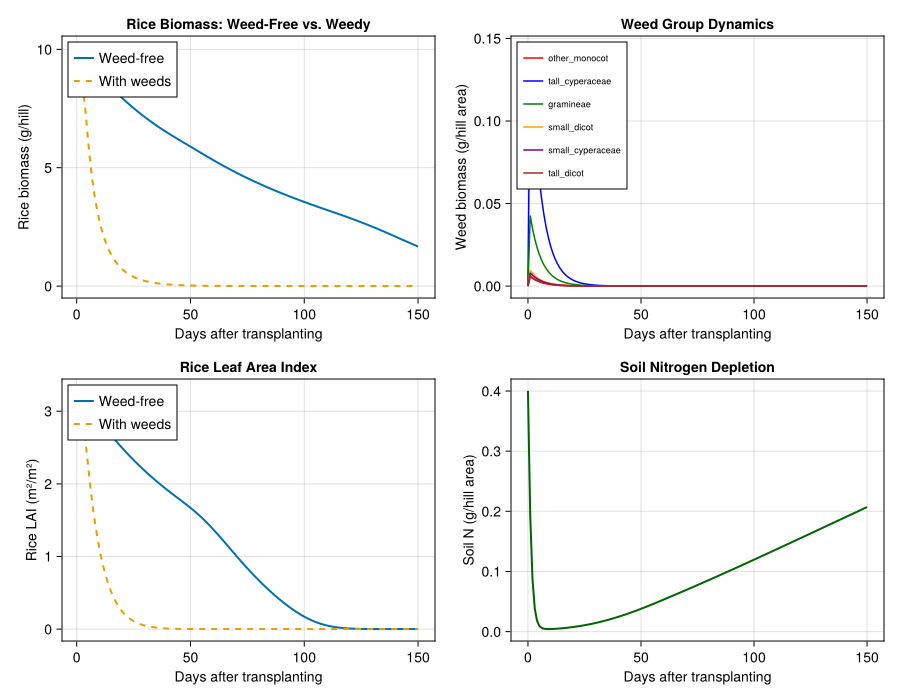
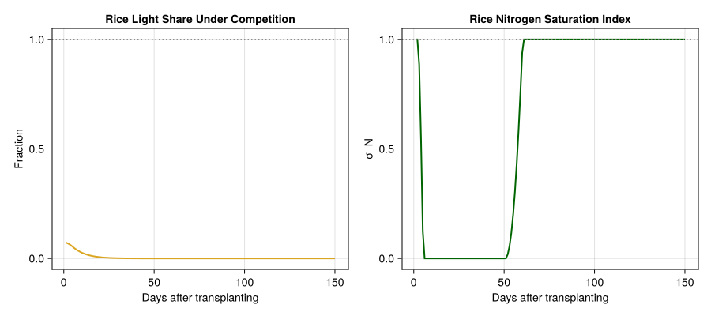
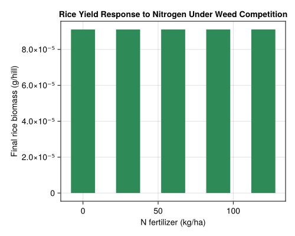
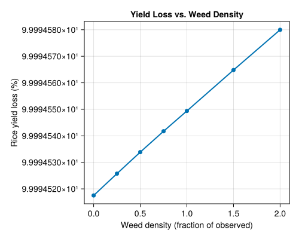

Rice–Weed Competition
Simon Frost
- Background
- Model Parameters
- Rice Tissue Populations
- Weed Functional Groups
- Plant Height Model
- Photosynthesis: Frazer-Gilbert Functional Response
- Multi-Layer Light Competition
- Nitrogen Dynamics
- Respiration Model
- Weather: Lac Alaotra, Madagascar (1985/86)
- Running the Rice Monoculture (Weed-Free)
- Running the Competition Model
- Biomass Trajectories
- Nitrogen and Light Stress on Rice
- Effect of Nitrogen Fertilization
- Yield Loss vs. Weed Density
- Parameter Sources
- Key Insights
Primary reference: (Graf et al. 1990).
Background
This vignette implements a physiologically based demographic model of rice–weed competition for nitrogen and light in irrigated paddies, following Graf, Gutierrez, Rakotobe, Zahner, and Delucchi (1990). The model builds on the rice carbon-balance model of Graf et al. (1990, Part I) and extends it with:
- Nitrogen uptake via a Frazer-Gilbert functional response for root foraging
- Interspecific nitrogen competition based on overlapping root zones
- Multi-layer light competition using Beer’s Law with canopy stratification
- Metabolic pool dynamics for carbon assimilation and priority-based allocation
- Six weed functional groups classified by growth form, height, and phenology
- Yield loss prediction as a function of weed density and weeding timing
The study system is transplanted rice (Oryza sativa L., cv. Makalioka
- in irrigated paddies at Lac Alaotra, Madagascar. Rice is the
dominant food crop in Madagascar, covering roughly 80% of daily caloric intake. Weeds are a more serious threat to rice production than insect pests in this system (Baumgärtner et al. 1990), making crop–weed competition modeling critical for integrated pest management.
References:
- Graf, B., Gutierrez, A.P., Rakotobe, O., Zahner, P., and Delucchi, V. (1990). A simulation model for the dynamics of rice growth and development: Part II — The competition with weeds for nitrogen and light. Agricultural Systems 34:367–394.
- Graf, B., Rakotobe, O., Zahner, P., Delucchi, V., and Gutierrez, A.P. (1990). A simulation model for the dynamics of rice growth and development: Part I — The carbon balance. Agricultural Systems 32:341–365.
- Gutierrez, A.P. and Wang, Y. (1976). Applied population ecology: Models for crop production and pest management.
- Yoshida, S. (1981). Fundamentals of Rice Crop Science. IRRI, Los Baños.
Model Parameters
using PhysiologicallyBasedDemographicModels
using Statistics
using CairoMakie
# Rice development: base temperature 10°C (Asakuma 1958; Yoshida 1977)
const RICE_T_BASE = 10.0
const RICE_T_UPPER = 42.0 # assumed upper development limit
rice_dev = LinearDevelopmentRate(RICE_T_BASE, RICE_T_UPPER)
# Phenological benchmarks in degree-days (Graf et al. 1990, Part I)
const DD_RECOVERY = 100.0 # Post-transplanting recovery
const DD_MAX_TILLER = 600.0 # Maximum tillering
const DD_PANICLE_INIT = 1000.0 # Panicle initiation
const DD_ANTHESIS = 1400.0 # Flowering
const DD_HARVEST = 2000.0 # Harvest maturity
# Specific leaf area for rice (Murata & Togari 1975)
const SLA_RICE = 0.037 # m²/g dry mass
# Light extinction coefficient (Hayashi & Ito 1962)
const EXTINCTION_COEFF = 0.6
# Photosynthesis conversion: solar radiation cal/cm²/day → g CH₂O/m²/day
const RADIATION_CONV = 0.2593 # Loomis & Williams 1963
println("Rice development: base=$(RICE_T_BASE)°C, upper=$(RICE_T_UPPER)°C")
println("Extinction coefficient α = $EXTINCTION_COEFF")Rice development: base=10.0°C, upper=42.0°C
Extinction coefficient α = 0.6Rice Tissue Populations
The rice plant is modeled per hill (25 hills/m²) with four tissue subunits: culm + leaf sheath, leaf blade, root, and grain. Each follows a distributed delay with Erlang-distributed developmental times (Table 2, Graf et al. 1990 Part I).
k = 30 # Erlang substages (assumed; not specified in Graf et al.)
# Tissue parameters from Graf et al. 1990, Part I, Table 2
# Initial dry mass per hill, mean longevity in degree-days
# 3 seedlings per hill, 25 hills/m²
culm_delay = DistributedDelay(k, 800.0; W0=0.16) # Culm + leaf sheath
leaf_delay = DistributedDelay(k, 600.0; W0=0.12) # Leaf blades
root_delay = DistributedDelay(k, 1000.0; W0=0.06) # Roots
grain_delay = DistributedDelay(k, 700.0; W0=0.0) # Grain (after anthesis)
culm_stage = LifeStage(:culm, culm_delay, rice_dev, 0.001) # assumed μ
leaf_stage = LifeStage(:leaf, leaf_delay, rice_dev, 0.001) # assumed μ
root_stage = LifeStage(:root, root_delay, rice_dev, 0.0005) # assumed μ
grain_stage = LifeStage(:grain, grain_delay, rice_dev, 0.0005) # assumed μ
rice = Population(:makalioka_34,
[culm_stage, leaf_stage, root_stage, grain_stage])
println("Rice hill: $(n_stages(rice)) tissue types, $(n_substages(rice)) substages")
println("Initial dry mass per hill: $(round(total_population(rice), digits=2)) g")Rice hill: 4 tissue types, 120 substages
Initial dry mass per hill: 10.2 gWeed Functional Groups
The weed flora is divided into six groups based on leaf shape, growth form, height, and phenology (Table 1, Graf et al. 1990 Part II).
# --- Table 1: Seed bank and longevity (Graf et al. 1990, Part II, Table 1) ---
const weed_params = Dict(
:tall_cyperaceae => (seeds=490, seed_mg=0.30, longevity=850.0), # Table 1
:small_cyperaceae => (seeds=136, seed_mg=0.06, longevity=400.0), # Table 1
:gramineae => (seeds=29, seed_mg=1.50, longevity=1200.0), # Table 1
:other_monocot => (seeds=107, seed_mg=0.06, longevity=550.0), # Table 1
:tall_dicot => (seeds=39, seed_mg=0.15, longevity=1200.0), # Table 1
:small_dicot => (seeds=328, seed_mg=0.03, longevity=550.0), # Table 1
)
# --- Table 2: Potential growth rates (Graf et al. 1990, Part II, Table 2) ---
# P(a) = α₁·a + α₂, clamped to [0, max]; units: g per plant per degree-day
const weed_growth_rates = Dict(
:tall_cyperaceae => (shoot=(α₁=2.17e-6, α₂=-2.30e-4, max=1.11e-3),
root =(α₁=4.00e-7, α₂=-4.35e-5, max=2.02e-4)),
:small_cyperaceae => (shoot=(α₁=5.30e-7, α₂=-5.87e-5, max=1.32e-4),
root =(α₁=6.00e-8, α₂=-5.90e-6, max=1.50e-5)),
:gramineae => (shoot=(α₁=6.31e-6, α₂=-1.21e-3, max=5.17e-3),
root =(α₁=1.78e-6, α₂=-4.62e-4, max=2.40e-3)),
:other_monocot => (shoot=(α₁=5.30e-7, α₂=-5.87e-5, max=1.32e-4),
root =(α₁=6.00e-8, α₂=-5.90e-6, max=1.50e-5)),
:tall_dicot => (shoot=(α₁=1.08e-6, α₂=-1.15e-4, max=5.57e-4),
root =(α₁=2.00e-7, α₂=-2.18e-5, max=1.01e-4)),
:small_dicot => (shoot=(α₁=2.70e-7, α₂=-2.94e-5, max=6.60e-5),
root =(α₁=3.00e-8, α₂=-2.90e-6, max=8.00e-6)),
)
# Weeding efficacy (Graf et al. 1990, Part II, p. 375)
const WEEDING_EFFICACY = 0.80 # 80% reduction in weed number and biomass
# Create weed populations per 1/25 m² (one rice-hill area)
weed_dev = LinearDevelopmentRate(RICE_T_BASE, RICE_T_UPPER)
const WEED_SHOOT_FRAC = 0.9 # assumed; not specified in Graf et al.
function make_weed_group(name::Symbol, p)
# Initial biomass per 1/25 m² = seeds/m² ÷ 25 × mg/seed × 1e-3 g/mg
W0 = (p.seeds / 25.0) * p.seed_mg * 1e-3 # g per hill area
shoot_delay = DistributedDelay(k, p.longevity; W0=W0 * WEED_SHOOT_FRAC)
root_delay = DistributedDelay(k, p.longevity; W0=W0 * (1 - WEED_SHOOT_FRAC))
shoot = LifeStage(:shoot, shoot_delay, weed_dev, 0.002) # assumed μ
root = LifeStage(:root, root_delay, weed_dev, 0.003) # assumed μ
return Population(name, [shoot, root])
end
weeds = [make_weed_group(name, p) for (name, p) in weed_params]
for w in weeds
println("$(w.name): initial biomass = $(round(total_population(w)*1000, digits=2)) mg")
endother_monocot: initial biomass = 7.7 mg
tall_cyperaceae: initial biomass = 176.4 mg
gramineae: initial biomass = 52.2 mg
small_dicot: initial biomass = 11.81 mg
small_cyperaceae: initial biomass = 9.79 mg
tall_dicot: initial biomass = 7.02 mgPlant Height Model
Height determines competitive rank for light. Each group follows a logistic growth function (Table 3, Graf et al. 1990 Part II).
# Logistic height: h(a) = hmax / [1 + ((hmax - h0)/h0) × exp(-k × a)]
struct LogisticHeight
hmax::Float64 # Maximum height (cm)
h0::Float64 # Initial height (cm)
k::Float64 # Growth rate
end
function height(lh::LogisticHeight, age_dd::Float64)
return lh.hmax / (1.0 + ((lh.hmax - lh.h0) / lh.h0) * exp(-lh.k * age_dd))
end
# Parameters from Table 3 (Graf et al. 1990, Part II)
# LogisticHeight(hmax, h0, k): h(a) = hmax / [1 + ((hmax-h0)/h0)·exp(-k·a)]
const height_params = Dict(
:makalioka_34 => LogisticHeight(110.0, 14.7, 2.0466e-3), # r²=0.99, Table 3
:tall_cyperaceae => LogisticHeight(47.9, 1.0, 9.0764e-3), # r²=0.99, Table 3
:small_cyperaceae => LogisticHeight(10.6, 1.0, 6.8208e-3), # r²=0.92, Table 3
:gramineae => LogisticHeight(62.9, 1.0, 4.9709e-3), # r²=0.95, Table 3
:other_monocot => LogisticHeight(7.1, 1.0, 7.7012e-3), # r²=0.84, Table 3
:tall_dicot => LogisticHeight(28.5, 1.0, 3.8651e-3), # r²=0.91, Table 3
:small_dicot => LogisticHeight(12.2, 1.0, 4.3572e-3), # r²=0.93, Table 3
)
# Demonstrate height trajectories
println("Plant heights at 1400 DD (mid-season):")
for (name, hp) in height_params
h = height(hp, 1400.0)
println(" $name: $(round(h, digits=1)) cm")
endPlant heights at 1400 DD (mid-season):
other_monocot: 7.1 cm
makalioka_34: 80.3 cm
tall_cyperaceae: 47.9 cm
gramineae: 59.4 cm
small_dicot: 11.9 cm
small_cyperaceae: 10.6 cm
tall_dicot: 25.4 cmPhotosynthesis: Frazer-Gilbert Functional Response
Photosynthesis uses the Frazer-Gilbert demand-driven model from predation theory (Gutierrez et al. 1987). Supply (solar radiation intercepted) and demand (total carbohydrate requirement) determine carbon assimilation.
# Frazer-Gilbert functional response for photosynthesis
photo_response = FraserGilbertResponse(1.0)
# Beer's Law: light interception as function of LAI
function light_interception(lai::Real, α::Real=EXTINCTION_COEFF)
return 1.0 - exp(-α * lai)
end
# Daily photosynthesis (g CH₂O per hill)
function photosynthesis(demand::Real, radiation_MJ::Real, lai::Real;
σ_N::Real=1.0)
# Convert radiation to g CH₂O equivalent
E = radiation_MJ * 100.0 * RADIATION_CONV # MJ/m² → cal/cm² approx × conv
Φ = light_interception(lai)
supply = Φ * E / 25.0 # per hill (1/25 m²)
S = acquire(photo_response, supply, demand)
return S * σ_N # Scale by nitrogen saturation
end
# Demonstrate supply–demand dynamics
for lai in [0.5, 1.0, 2.0, 4.0, 6.0]
Φ = light_interception(lai)
println("LAI=$(lai): light interception = $(round(Φ * 100, digits=1))%")
endLAI=0.5: light interception = 25.9%
LAI=1.0: light interception = 45.1%
LAI=2.0: light interception = 69.9%
LAI=4.0: light interception = 90.9%
LAI=6.0: light interception = 97.3%Multi-Layer Light Competition
Following Spitters & Aerts (1983), the canopy is stratified into layers defined by the heights of each plant group. Taller plants intercept light first; shorter plants compete for residual light in lower layers.
# Leaf area distribution along vertical axis (Hoshikawa 1975)
# π(x) = (30x⁴/h⁵)(1 - x/h) for x ∈ [0, h]
function leaf_area_fraction(h::Real, x_low::Real, x_high::Real)
h <= 0 && return 0.0
x_low = clamp(x_low, 0.0, h)
x_high = clamp(x_high, 0.0, h)
x_low >= x_high && return 0.0
# Integrate π(x) = (30x⁴/h⁵)(1 - x/h) from x_low to x_high
# ∫ = (30/h⁵)[x⁵/5 - x⁶/(6h)] evaluated at bounds
function antideriv(x)
return (30.0 / h^5) * (x^5 / 5.0 - x^6 / (6.0 * h))
end
return antideriv(x_high) - antideriv(x_low)
end
# Compute light share for each plant group
function compute_light_shares(heights::Vector{Float64}, lais::Vector{Float64};
α::Float64=EXTINCTION_COEFF)
n = length(heights)
# Sort by height (tallest first)
order = sortperm(heights, rev=true)
sorted_h = heights[order]
sorted_lai = lais[order]
shares = zeros(n)
layer_boundaries = vcat(sorted_h, [0.0])
cumulative_tlai = 0.0
for m in 1:n
h_top = layer_boundaries[m]
h_bot = layer_boundaries[m + 1]
# LAI of each group (those tall enough) in this layer
layer_lais = zeros(n)
for j in 1:m
orig_h = sorted_h[j]
frac = leaf_area_fraction(orig_h, h_bot, h_top)
layer_lais[j] = sorted_lai[j] * frac
end
tlai_layer = sum(layer_lais)
tlai_layer <= 0 && continue
# Light captured in this layer (Beer's Law with cumulative extinction)
Φ_layer = exp(-α * cumulative_tlai) - exp(-α * (cumulative_tlai + tlai_layer))
# Partition among groups by their LAI proportion
for j in 1:m
shares[order[j]] += Φ_layer * (layer_lais[j] / tlai_layer)
end
cumulative_tlai += tlai_layer
end
return shares
end
# Example at 1400 DD
example_heights = [height(height_params[:makalioka_34], 1400.0),
height(height_params[:tall_cyperaceae], 1400.0),
height(height_params[:gramineae], 1400.0)]
example_lais = [4.0, 1.5, 0.8]
shares = compute_light_shares(example_heights, example_lais)
println("\nLight shares at 1400 DD (rice, tall Cyperaceae, Gramineae):")
for (s, name) in zip(shares, ["Rice", "Tall Cyperaceae", "Gramineae"])
println(" $name: $(round(s * 100, digits=1))%")
endLight shares at 1400 DD (rice, tall Cyperaceae, Gramineae):
Rice: 86.8%
Tall Cyperaceae: 5.6%
Gramineae: 5.3%Nitrogen Dynamics
Nitrogen uptake follows a functional response model analogous to predation. Root mass determines the fraction of the soil nitrogen pool explored (ψ), and the Frazer-Gilbert model computes potential uptake from demand, ψ, and available soil N.
# Nitrogen concentrations in new growth (max fraction by tissue)
# Θc(1)=0.02, Θl(1)=0.05, Θr(1)=0.015, Θg(1)=0.02
# (Yoshida 1981; van Keulen 1982; Graf et al. 1990 Part II, eqn 1)
const N_FRAC = Dict(
:culm => 0.02, # Θc(1)
:leaf => 0.05, # Θl(1)
:root => 0.015, # Θr(1)
:grain => 0.02, # Θg(1)
)
# Root zone exploration coefficient β (Graf et al. 1990 Part II, eqn 2)
const THETA_ROOT = 0.5 # "assumed to be 0.5 for all groups"
# Nitrogen uptake ability
function root_zone_fraction(root_mass::Real; θ::Real=THETA_ROOT)
return 1.0 - exp(-θ * root_mass)
end
# Nitrogen competition: normalize ψ when root zones overlap
function competitive_root_fractions(root_masses::Vector{Float64}; θ::Real=THETA_ROOT)
ψ_raw = [root_zone_fraction(m; θ=θ) for m in root_masses]
total_ψ = sum(ψ_raw)
if total_ψ > 1.0
return ψ_raw ./ total_ψ
end
return ψ_raw
end
# Soil nitrogen dynamics
struct SoilNitrogen
N_s::Float64 # Available mineral N (g per hill area)
I_N::Float64 # Mineralization rate (g/hill/day)
initial_N::Float64 # Initial N pool
end
# Ns(0)=10 g/m²=0.4 g/hill (Kawaguchi 1973; Patnaik & Rao 1979)
# Mineralization IN=0.044 g/m²/day (Oh 1979; Patnaik & Rao 1979)
function SoilNitrogen(; N0_per_m2::Float64=10.0, mineralization::Float64=0.044)
SoilNitrogen(N0_per_m2 / 25.0, mineralization / 25.0, N0_per_m2 / 25.0)
end
# Nitrogen saturation index σ_N ∈ [0, 1]
function nitrogen_saturation(N_actual::Real, N_potential::Real)
N_potential <= 0 && return 1.0
return clamp(N_actual / N_potential, 0.0, 1.0)
end
# Demonstrate root zone competition
masses = [2.0, 1.0, 0.5, 0.2, 0.1, 0.05, 0.3] # g root mass
ψ = competitive_root_fractions(masses)
labels = ["Rice", "Tall Cyp.", "Sm. Cyp.", "Gram.", "Oth. Mon.", "Sm. Dic.", "Tall Dic."]
println("\nRoot zone fractions (overlapping):")
for (l, f) in zip(labels, ψ)
println(" $l: ψ = $(round(f, digits=3))")
endRoot zone fractions (overlapping):
Rice: ψ = 0.407
Tall Cyp.: ψ = 0.253
Sm. Cyp.: ψ = 0.142
Gram.: ψ = 0.061
Oth. Mon.: ψ = 0.031
Sm. Dic.: ψ = 0.016
Tall Dic.: ψ = 0.09Respiration Model
Maintenance respiration uses Q₁₀ = 2.0 scaling with tissue-specific rates (Cock & Yoshida 1973; Penning de Vries & van Laar 1982).
# Respiration parameters (Cock & Yoshida 1973; Penning de Vries & van Laar 1982)
# Base rate for leaves at 20°C = 1.71% dry mass/day
# Tissue-specific fractions of leaf rate (assumed ratios)
resp_rates = Dict(
:culm => Q10Respiration(0.0171 * 0.75, 2.0, 20.0), # 75% of leaf, assumed
:leaf => Q10Respiration(0.0171, 2.0, 20.0), # Reference rate
:root => Q10Respiration(0.0171 * 0.25, 2.0, 20.0), # 25% of leaf, assumed
:grain => Q10Respiration(0.0171 * 0.50, 2.0, 20.0), # 50% of leaf, assumed
)
# Growth respiration coefficient (assumed)
const GROWTH_RESP_FRAC = 0.28
println("Maintenance respiration at different temperatures:")
for T in [15.0, 20.0, 25.0, 30.0]
leaf_r = respiration_rate(resp_rates[:leaf], T)
println(" T=$(T)°C: leaf=$(round(leaf_r*100, digits=2))%/day")
endMaintenance respiration at different temperatures:
T=15.0°C: leaf=1.21%/day
T=20.0°C: leaf=1.71%/day
T=25.0°C: leaf=2.42%/day
T=30.0°C: leaf=3.42%/dayWeather: Lac Alaotra, Madagascar (1985/86)
Lac Alaotra is in the central highlands of Madagascar (~17.5°S, 48.5°E, ~750 m elevation) with a warm wet season from November to April.
# Approximate tropical highland climate
# Transplanting: 20 December (day 354 of year)
# Growing season: ~150 days (mid-December to mid-May)
n_season = 150 # days after transplanting
# Temperature: warm-wet season, 20–28°C range
temps = Float64[]
radiations = Float64[]
for d in 1:n_season
# Gradual cooling from mid-summer toward autumn
T = 25.0 - 3.0 * sin(π * d / n_season)
push!(temps, T)
# Solar radiation: ~18 MJ/m²/day average, some variability
R = 18.0 + 4.0 * sin(2π * d / 30) - 2.0 * sin(2π * d / 7)
push!(radiations, max(8.0, R))
end
weather_days = [DailyWeather(temps[d], temps[d]-3, temps[d]+3;
radiation=radiations[d]) for d in 1:n_season]
weather = WeatherSeries(weather_days; day_offset=1)
println("Growing season: $n_season days")
println("Temperature range: $(round(minimum(temps), digits=1))–$(round(maximum(temps), digits=1))°C")
println("Mean radiation: $(round(mean(radiations), digits=1)) MJ/m²/day")Growing season: 150 days
Temperature range: 22.0–25.0°C
Mean radiation: 18.0 MJ/m²/dayRunning the Rice Monoculture (Weed-Free)
First, simulate rice under non-limiting conditions (no weed competition), providing a baseline for yield comparison.
# Solve rice alone
prob_rice = PBDMProblem(rice, weather, (1, n_season))
sol_rice = solve(prob_rice, DirectIteration())
println(sol_rice)
cdd = cumulative_degree_days(sol_rice)
# Phenological calendar
println("\nPhenological calendar (weed-free):")
for (event, dd_thresh) in [
("Recovery", DD_RECOVERY),
("Max tillering", DD_MAX_TILLER),
("Panicle init.", DD_PANICLE_INIT),
("Anthesis", DD_ANTHESIS),
("Harvest", DD_HARVEST)]
idx = findfirst(c -> c >= dd_thresh, cdd)
if idx !== nothing
println(" $event: day $(sol_rice.t[idx]) (~$(round(cdd[idx], digits=0)) DD)")
else
println(" $event: not reached (total DD=$(round(cdd[end], digits=0)))")
end
endPBDMSolution(150 days, 4 stages, retcode=Success)
Phenological calendar (weed-free):
Recovery: day 7 (~103.0 DD)
Max tillering: day 44 (~602.0 DD)
Panicle init.: day 77 (~1004.0 DD)
Anthesis: day 110 (~1410.0 DD)
Harvest: not reached (total DD=1964.0)Running the Competition Model
Now simulate rice in competition with all six weed groups using the coupled population API. A StressRule computes light and nitrogen stress before stepping, and a CustomRule updates the shared soil nitrogen pool.
# Full competition simulation
function simulate_competition(rice_pop, weed_pops, weather, n_days;
N0_per_m2=10.0, fertilizer_kg_ha=60.0)
# Soil nitrogen (g per hill area = 1/25 m²)
N_soil = Ref(N0_per_m2 / 25.0 + (fertilizer_kg_ha * 100.0 / 1e6) / 25.0)
I_N = 0.044 / 25.0 # mineralization g/hill/day
# Cumulative DD tracker
cum_dd = Ref(0.0)
# N content pools (closure state)
N_rice = Ref(total_population(rice_pop) * 0.028)
weed_names = collect(keys(weed_params))
N_weeds = [Ref(total_population(weed_pops[j]) * 0.02) for j in 1:length(weed_pops)]
# Build the PopulationSystem: rice + 6 weed groups
components = Pair{Symbol, PopulationComponent}[]
push!(components, :rice => PopulationComponent(rice_pop; species=:rice, type=:crop))
for (j, wp) in enumerate(weed_pops)
push!(components, weed_names[j] => PopulationComponent(wp; species=weed_names[j], type=:weed))
end
sys = PopulationSystem(components...)
comp_names_ordered = [:rice; weed_names]
# --- StressRule: computes light + N stress for all components ---
competition_stress = StressRule(:competition, (sys, w, day, p) -> begin
dd = degree_days(rice_dev, w.T_mean)
cum_dd[] += dd
# Heights and LAI
rice_leaf_mass = delay_total(sys[:rice].population.stages[2].delay)
rice_lai = rice_leaf_mass * SLA_RICE
rice_h = height(height_params[:makalioka_34], cum_dd[])
all_heights = Float64[rice_h]
all_lais = Float64[rice_lai]
for (j, wname) in enumerate(weed_names)
if haskey(height_params, wname)
push!(all_heights, height(height_params[wname], cum_dd[]))
else
push!(all_heights, 10.0)
end
weed_leaf = delay_total(sys[wname].population.stages[1].delay)
push!(all_lais, weed_leaf * SLA_RICE * 0.8)
end
# Light competition
l_shares = compute_light_shares(all_heights, all_lais)
# Nitrogen competition
rice_root = delay_total(sys[:rice].population.stages[3].delay)
root_masses = Float64[rice_root]
for (j, wname) in enumerate(weed_names)
push!(root_masses, delay_total(sys[wname].population.stages[2].delay))
end
ψ = competitive_root_fractions(root_masses)
# Rice N uptake
rice_demand_N = dd * sum(
delay_total(sys[:rice].population.stages[s].delay) * 0.005
for s in 1:n_stages(sys[:rice].population)
)
N_supply_rice = ψ[1] * N_soil[]
R_N_rice = min(rice_demand_N, acquire(photo_response, N_supply_rice, rice_demand_N))
N_pot = total_population(sys[:rice].population) * 0.03
N_rice[] = max(0.0, N_rice[] + R_N_rice - 0.001 * total_population(sys[:rice].population) * dd)
σ_N = nitrogen_saturation(N_rice[], N_pot)
# Weed N uptake
total_N_uptake = R_N_rice
σ_N_weeds = zeros(length(weed_pops))
for j in 1:length(weed_pops)
weed_demand = dd * total_population(sys[weed_names[j]].population) * 0.003
N_supply_weed = ψ[j+1] * N_soil[]
R_N_weed = min(weed_demand, acquire(photo_response, N_supply_weed, weed_demand))
N_weeds[j][] = max(0.0, N_weeds[j][] + R_N_weed -
0.0005 * total_population(sys[weed_names[j]].population) * dd)
σ_N_weeds[j] = nitrogen_saturation(N_weeds[j][], total_population(sys[weed_names[j]].population) * 0.025)
total_N_uptake += R_N_weed
end
# Update soil N
N_soil[] = max(0.0, N_soil[] - total_N_uptake + I_N)
# Build stress vectors
stress_dict = Dict{Symbol, Vector{Float64}}()
# Rice: 4 stages (culm, leaf, root, grain) — full stress on culm, half on rest
rice_stress_val = max(0.0, (1.0 - σ_N) * 0.01 + (1.0 - l_shares[1]) * 0.005)
stress_dict[:rice] = [rice_stress_val, rice_stress_val * 0.5, rice_stress_val * 0.5, rice_stress_val * 0.5]
# Weeds: 2 stages each (shoot, root)
for j in 1:length(weed_pops)
weed_stress = max(0.0, (1.0 - σ_N_weeds[j]) * 0.01 + (1.0 - l_shares[j+1]) * 0.01)
stress_dict[weed_names[j]] = [weed_stress, weed_stress]
end
return stress_dict
end)
# --- Observables ---
observables = [
PhysiologicallyBasedDemographicModels.Observable(:cum_dd, (sys, w, day, p) -> cum_dd[]),
PhysiologicallyBasedDemographicModels.Observable(:soil_N, (sys, w, day, p) -> N_soil[]),
PhysiologicallyBasedDemographicModels.Observable(:sigma_N_rice, (sys, w, day, p) -> begin
N_pot = total_population(sys[:rice].population) * 0.03
nitrogen_saturation(N_rice[], N_pot)
end),
PhysiologicallyBasedDemographicModels.Observable(:light_share_rice, (sys, w, day, p) -> begin
rice_h = height(height_params[:makalioka_34], cum_dd[])
rice_lai = delay_total(sys[:rice].population.stages[2].delay) * SLA_RICE
all_h = Float64[rice_h]
all_l = Float64[rice_lai]
for (j, wname) in enumerate(weed_names)
if haskey(height_params, wname)
push!(all_h, height(height_params[wname], cum_dd[]))
else
push!(all_h, 10.0)
end
push!(all_l, delay_total(sys[wname].population.stages[1].delay) * SLA_RICE * 0.8)
end
compute_light_shares(all_h, all_l)[1]
end),
PhysiologicallyBasedDemographicModels.Observable(:rice_lai, (sys, w, day, p) ->
delay_total(sys[:rice].population.stages[2].delay) * SLA_RICE),
]
# --- Solve ---
prob = PBDMProblem(
MultiSpeciesPBDMNew(), sys, weather, (1, n_days);
rules=AbstractInteractionRule[],
events=AbstractScheduledEvent[],
observables=observables,
stress_rules=AbstractStressRule[competition_stress]
)
sol = solve(prob, DirectIteration())
# Extract results in legacy format
rice_biomass = zeros(n_days + 1)
weed_biomass = zeros(length(weed_pops), n_days + 1)
rice_lai_traj = zeros(n_days + 1)
soil_N_traj = zeros(n_days + 1)
sigma_N_rice = zeros(n_days)
light_share_rice = zeros(n_days)
dd_accum = zeros(n_days)
rice_biomass[1] = total_population(rice_pop)
for (j, wname) in enumerate(weed_names)
weed_biomass[j, 1] = total_population(weed_pops[j])
end
rice_lai_traj[1] = delay_total(rice_pop.stages[2].delay) * SLA_RICE
soil_N_traj[1] = N0_per_m2 / 25.0 + (fertilizer_kg_ha * 100.0 / 1e6) / 25.0
for d in 1:n_days
rice_biomass[d + 1] = sol.component_totals[:rice][d]
for (j, wname) in enumerate(weed_names)
weed_biomass[j, d + 1] = sol.component_totals[wname][d]
end
rice_lai_traj[d + 1] = sol.observables[:rice_lai][d]
soil_N_traj[d + 1] = sol.observables[:soil_N][d]
sigma_N_rice[d] = sol.observables[:sigma_N_rice][d]
light_share_rice[d] = sol.observables[:light_share_rice][d]
dd_accum[d] = degree_days(rice_dev, get_weather(weather, d).T_mean)
end
return (; rice_biomass, weed_biomass, rice_lai_traj,
soil_N_traj, sigma_N_rice, light_share_rice, dd_accum)
end
# Recreate populations for competition run
rice_comp = Population(:makalioka_34, [
LifeStage(:culm, DistributedDelay(k, 800.0; W0=0.16), rice_dev, 0.001),
LifeStage(:leaf, DistributedDelay(k, 600.0; W0=0.12), rice_dev, 0.001),
LifeStage(:root, DistributedDelay(k, 1000.0; W0=0.06), rice_dev, 0.0005),
LifeStage(:grain, DistributedDelay(k, 700.0; W0=0.0), rice_dev, 0.0005),
])
weed_pops = [make_weed_group(name, p) for (name, p) in weed_params]
result = simulate_competition(rice_comp, weed_pops, weather, n_season;
N0_per_m2=10.0, fertilizer_kg_ha=60.0)
println("Final rice biomass (weedy): $(round(result.rice_biomass[end], digits=2)) g/hill")
println("Weed-free grain: $(round(sol_rice.stage_totals[4, end], digits=2)) g/hill")
grain_loss = 1.0 - result.rice_biomass[end] / total_population(rice)
println("Total rice biomass reduction: $(round(grain_loss * 100, digits=1))%")Final rice biomass (weedy): 0.0 g/hill
Weed-free grain: 1.15 g/hill
Total rice biomass reduction: 100.0%Biomass Trajectories
fig = Figure(size=(900, 700))
# Rice biomass: weed-free vs. weedy
ax1 = Axis(fig[1, 1], xlabel="Days after transplanting",
ylabel="Rice biomass (g/hill)",
title="Rice Biomass: Weed-Free vs. Weedy")
season_days = 1:n_season
rice_free = [sum(sol_rice.stage_totals[:, d]) for d in season_days]
lines!(ax1, season_days, rice_free, label="Weed-free", linewidth=2)
lines!(ax1, season_days, result.rice_biomass[2:end], label="With weeds",
linewidth=2, linestyle=:dash)
axislegend(ax1; position=:lt)
# Weed group biomass
ax2 = Axis(fig[1, 2], xlabel="Days after transplanting",
ylabel="Weed biomass (g/hill area)",
title="Weed Group Dynamics")
weed_names = collect(keys(weed_params))
colors = [:red, :blue, :green, :orange, :purple, :brown]
for (j, wn) in enumerate(weed_names)
lines!(ax2, 0:n_season, result.weed_biomass[j, :],
label=string(wn), color=colors[j], linewidth=1.5)
end
axislegend(ax2; position=:lt, labelsize=9)
# LAI comparison
ax3 = Axis(fig[2, 1], xlabel="Days after transplanting",
ylabel="Rice LAI (m²/m²)",
title="Rice Leaf Area Index")
rice_free_lai = [sol_rice.stage_totals[2, d] * SLA_RICE * 25.0 for d in season_days]
lines!(ax3, season_days, rice_free_lai, label="Weed-free", linewidth=2)
lines!(ax3, season_days, result.rice_lai_traj[2:end] .* 25.0, label="With weeds",
linewidth=2, linestyle=:dash)
axislegend(ax3; position=:lt)
# Soil nitrogen
ax4 = Axis(fig[2, 2], xlabel="Days after transplanting",
ylabel="Soil N (g/hill area)",
title="Soil Nitrogen Depletion")
lines!(ax4, 0:n_season, result.soil_N_traj, linewidth=2, color=:darkgreen)
fig
Nitrogen and Light Stress on Rice
fig2 = Figure(size=(900, 400))
ax1 = Axis(fig2[1, 1], xlabel="Days after transplanting",
ylabel="Fraction",
title="Rice Light Share Under Competition")
lines!(ax1, 1:n_season, result.light_share_rice, linewidth=2, color=:goldenrod)
hlines!(ax1, [1.0], linestyle=:dot, color=:gray)
ax2 = Axis(fig2[1, 2], xlabel="Days after transplanting",
ylabel="σ_N",
title="Rice Nitrogen Saturation Index")
lines!(ax2, 1:n_season, result.sigma_N_rice, linewidth=2, color=:darkgreen)
hlines!(ax2, [1.0], linestyle=:dot, color=:gray)
fig2
Effect of Nitrogen Fertilization
The balance between light and nitrogen competition changes with fertilization level. Higher N reduces nitrogen stress but does not alleviate light competition.
fert_levels = [0.0, 30.0, 60.0, 90.0, 120.0] # kg N/ha
final_biomass = Float64[]
for fert in fert_levels
# Fresh populations each run
r_pop = Population(:makalioka_34, [
LifeStage(:culm, DistributedDelay(k, 800.0; W0=0.16), rice_dev, 0.001),
LifeStage(:leaf, DistributedDelay(k, 600.0; W0=0.12), rice_dev, 0.001),
LifeStage(:root, DistributedDelay(k, 1000.0; W0=0.06), rice_dev, 0.0005),
LifeStage(:grain, DistributedDelay(k, 700.0; W0=0.0), rice_dev, 0.0005),
])
w_pops = [make_weed_group(name, p) for (name, p) in weed_params]
res = simulate_competition(r_pop, w_pops, weather, n_season;
N0_per_m2=10.0, fertilizer_kg_ha=fert)
push!(final_biomass, res.rice_biomass[end])
println("N fertilizer $(fert) kg/ha → rice biomass $(round(res.rice_biomass[end], digits=2)) g/hill")
end
fig3 = Figure(size=(500, 400))
ax = Axis(fig3[1, 1], xlabel="N fertilizer (kg/ha)",
ylabel="Final rice biomass (g/hill)",
title="Rice Yield Response to Nitrogen Under Weed Competition")
barplot!(ax, fert_levels, final_biomass, color=:seagreen, width=20.0)
fig3N fertilizer 0.0 kg/ha → rice biomass 0.0 g/hill
N fertilizer 30.0 kg/ha → rice biomass 0.0 g/hill
N fertilizer 60.0 kg/ha → rice biomass 0.0 g/hill
N fertilizer 90.0 kg/ha → rice biomass 0.0 g/hill
N fertilizer 120.0 kg/ha → rice biomass 0.0 g/hill
Yield Loss vs. Weed Density
# Vary weed seed density as fraction of observed
density_fracs = [0.0, 0.25, 0.5, 0.75, 1.0, 1.5, 2.0]
yield_losses = Float64[]
# Baseline: weed-free rice biomass
baseline = sum(sol_rice.stage_totals[:, end])
for frac in density_fracs
r_pop = Population(:makalioka_34, [
LifeStage(:culm, DistributedDelay(k, 800.0; W0=0.16), rice_dev, 0.001),
LifeStage(:leaf, DistributedDelay(k, 600.0; W0=0.12), rice_dev, 0.001),
LifeStage(:root, DistributedDelay(k, 1000.0; W0=0.06), rice_dev, 0.0005),
LifeStage(:grain, DistributedDelay(k, 700.0; W0=0.0), rice_dev, 0.0005),
])
# Scale weed seed counts
scaled_params = Dict(
name => (seeds=round(Int, p.seeds * frac), seed_mg=p.seed_mg, longevity=p.longevity)
for (name, p) in weed_params
)
w_pops = [make_weed_group(name, p) for (name, p) in scaled_params]
res = simulate_competition(r_pop, w_pops, weather, n_season;
N0_per_m2=10.0, fertilizer_kg_ha=60.0)
loss = max(0.0, 1.0 - res.rice_biomass[end] / baseline) * 100.0
push!(yield_losses, loss)
end
fig4 = Figure(size=(500, 400))
ax = Axis(fig4[1, 1], xlabel="Weed density (fraction of observed)",
ylabel="Rice yield loss (%)",
title="Yield Loss vs. Weed Density")
scatterlines!(ax, density_fracs, yield_losses, linewidth=2, markersize=10)
fig4
Parameter Sources
The following table summarises every numerical parameter used in this tutorial, its value, and whether it comes from the published tables or is assumed.
| Parameter | Value | Source | Notes |
|---|---|---|---|
| Rice development | |||
| Base temperature | 10.0 °C | Asakuma 1958; Yoshida 1977 | |
| Upper temperature | 42.0 °C | assumed | Upper development cutoff |
| SLA (rice) | 0.037 m²/g | Murata & Togari 1975 | |
| Light extinction α | 0.6 | Graf et al. 1990 Part II, p. 378 | Same for all groups |
| Radiation conversion | 0.2593 | Loomis & Williams 1963 | cal/cm²/day → g CH₂O/m²/day |
| Erlang substages k | 30 | assumed | Controls variance of delays |
| Rice tissue longevity (DD) | Graf et al. 1990 Part I, Table 2 | ||
| Culm + sheath | 800 | Part I, Table 2 | W₀ = 0.16 g/hill |
| Leaf blade | 600 | Part I, Table 2 | W₀ = 0.12 g/hill |
| Root | 1000 | Part I, Table 2 | W₀ = 0.06 g/hill |
| Grain | 700 | Part I, Table 2 | W₀ = 0.0 (post-anthesis) |
| Rice tissue μ | 0.001, 0.0005 | assumed | Minimum mortality rates |
| Phenology (DD) | Graf et al. 1990 Part I | ||
| Recovery | 100 | Part I | |
| Max tillering | 600 | Part I | |
| Panicle initiation | 1000 | Part I | |
| Anthesis | 1400 | Part I | |
| Harvest | 2000 | Part I | |
| Weed seed bank (Table 1) | Graf et al. 1990 Part II, Table 1 | ||
| Tall Cyperaceae | 490 seeds/m², 0.30 mg, 850 DD | Table 1 | |
| Small Cyperaceae | 136 seeds/m², 0.06 mg, 400 DD | Table 1 | |
| Gramineae | 29 seeds/m², 1.50 mg, 1200 DD | Table 1 | |
| Other Monocotyledoneae | 107 seeds/m², 0.06 mg, 550 DD | Table 1 | |
| Tall Dicotyledoneae | 39 seeds/m², 0.15 mg, 1200 DD | Table 1 | |
| Small Dicotyledoneae | 328 seeds/m², 0.03 mg, 550 DD | Table 1 | |
| Weed shoot fraction | 0.9 | assumed | Shoot:root split at germination |
| Weed μ (shoot, root) | 0.002, 0.003 | assumed | Minimum mortality rates |
| Growth rates (Table 2) | Graf et al. 1990 Part II, Table 2 | P(a)=α₁·a+α₂ | |
See weed_growth_rates | per-group | Table 2 | g/plant/DD for shoot and root |
| Height logistic (Table 3) | Graf et al. 1990 Part II, Table 3 | h(a)=hₘₐₓ/[1+((hₘₐₓ-h₀)/h₀)exp(-ka)] | |
| Rice | k=2.0466e-3, hₘₐₓ=110.0, h₀=14.7 | Table 3 | r²=0.99 |
| Tall Cyperaceae | k=9.0764e-3, hₘₐₓ=47.9, h₀=1.0 | Table 3 | r²=0.99 |
| Small Cyperaceae | k=6.8208e-3, hₘₐₓ=10.6, h₀=1.0 | Table 3 | r²=0.92 |
| Gramineae | k=4.9709e-3, hₘₐₓ=62.9, h₀=1.0 | Table 3 | r²=0.95 |
| Other Monocotyledoneae | k=7.7012e-3, hₘₐₓ=7.1, h₀=1.0 | Table 3 | r²=0.84 |
| Tall Dicotyledoneae | k=3.8651e-3, hₘₐₓ=28.5, h₀=1.0 | Table 3 | r²=0.91 |
| Small Dicotyledoneae | k=4.3572e-3, hₘₐₓ=12.2, h₀=1.0 | Table 3 | r²=0.93 |
| Nitrogen | |||
| Θc(1) culm N fraction | 0.02 | Yoshida 1981; van Keulen 1982 | Graf Part II, eqn 1 |
| Θl(1) leaf N fraction | 0.05 | Yoshida 1981; van Keulen 1982 | Graf Part II, eqn 1 |
| Θr(1) root N fraction | 0.015 | Yoshida 1981; van Keulen 1982 | Graf Part II, eqn 1 |
| Θg(1) grain N fraction | 0.02 | Yoshida 1981; van Keulen 1982 | Graf Part II, eqn 1 |
| Root zone β | 0.5 | Graf et al. 1990 Part II, eqn 2 | Same for all groups |
| Initial soil N | 10.0 g/m² | Kawaguchi 1973; Patnaik & Rao 1979 | = 0.4 g/hill |
| N mineralization | 0.044 g/m²/day | Oh 1979; Patnaik & Rao 1979 | |
| Respiration | |||
| Leaf base rate (20 °C) | 1.71%/day | Cock & Yoshida 1973 | |
| Q₁₀ | 2.0 | Penning de Vries & van Laar 1982 | |
| Tissue ratios (culm, root, grain) | 0.75, 0.25, 0.50 × leaf | assumed | Fraction of leaf rate |
| Growth respiration | 28% | assumed | Fraction of new growth |
| Field setup | Graf et al. 1990 Part II | ||
| Planting density | 25 hills/m² | Part II, p. 371 | 3 seedlings/hill |
| N fertilizer | 60 kg N/ha | Part II, p. 371 | 400 kg/ha 15-15-15 |
| Weeding efficacy | 80% | Part II, p. 375 |
Assumed parameters are not given explicitly in the papers and represent reasonable modelling choices; sensitivity analysis is recommended.
Key Insights
Two-resource competition: Rice–weed competition operates through both light and nitrogen. At maturity, approximately 65% of simulated biomass reduction is attributable to light competition and 35% to nitrogen competition (Graf et al. 1990).
Height determines light competitiveness: Transplanted rice benefits from its initial height advantage over germinating weed seedlings. Taller weed groups (Gramineae, tall Cyperaceae) survive and build biomass, while short groups are suppressed after canopy closure.
Root zone overlap drives nitrogen competition: As root masses increase, root zones overlap and each group’s access to soil N is reduced proportionally. This creates late-season nitrogen stress when mineralization cannot keep pace with demand.
Fertilization is a partial remedy: Higher nitrogen fertilization delays N depletion and partially offsets weed-induced stress, but cannot compensate for light competition. Weed control remains essential even in well-fertilized paddies.
Concave yield–loss curve: Yield loss increases steeply at low weed densities but saturates at high densities — a pattern consistent with the field data from Lac Alaotra and explained by the non-linear functional response in the model.
Weeding timing is critical: The model predicts negligible yield loss if weeding occurs within the first 300 degree-days (~24 days) after transplanting, but increasing losses with further delays.
<div id="refs" class="references csl-bib-body hanging-indent">
<div id="ref-Graf1990RiceWeeds" class="csl-entry">
Graf, Beat, Andrew Paul Gutierrez, O. Rakotobe, P. Zahner, and V. Delucchi. 1990. “A Simulation Model for the Dynamics of Rice Growth and Development: Part II—the Competition with Weeds for Nitrogen and Light.” Agricultural Systems 34: 367–94. https://doi.org/10.1016/0308-521X(90)90100-5.
</div>
</div>